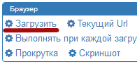

Добро пожаловать в БАС!
Для начала работы используйте действие "Загрузить":

Продажа скрипта. Защита скрипта. Магазин.
Если вы впервые используете БАС, пожалуйста, посмотрите эти руководства:
Руководство №1. Создание постера. Руководство №2. Создание парсера.
Примеры скриптов:
Посещение сайта. Регистратор QIP. Проверка прокси на наличие в черных списках. Hideme Парсер (Спасибо Turutur).
Эти ссылки также могут быть полезными: